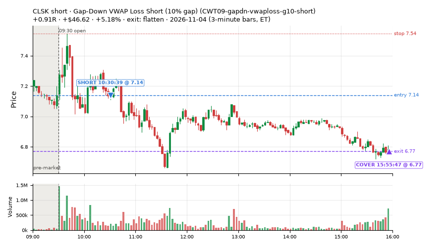
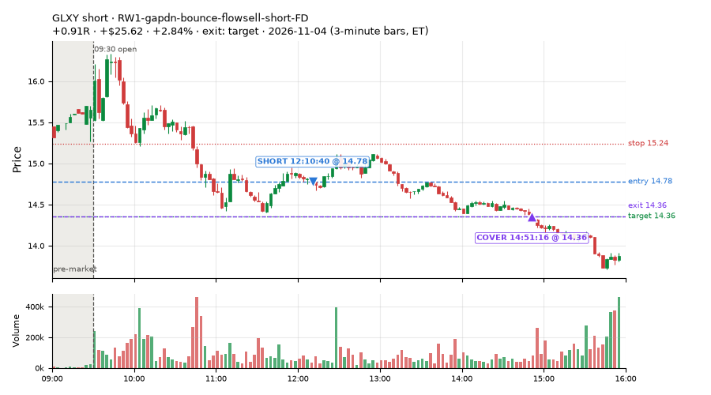
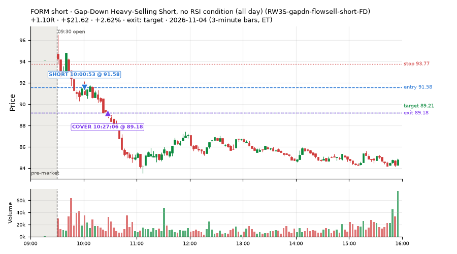
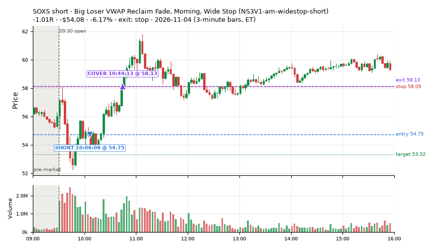
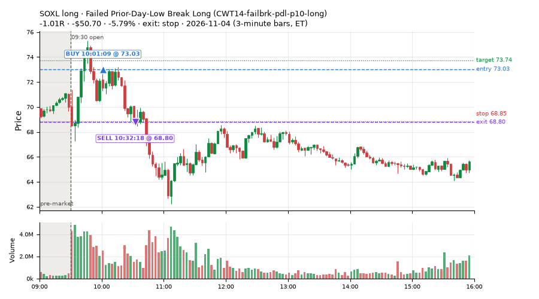
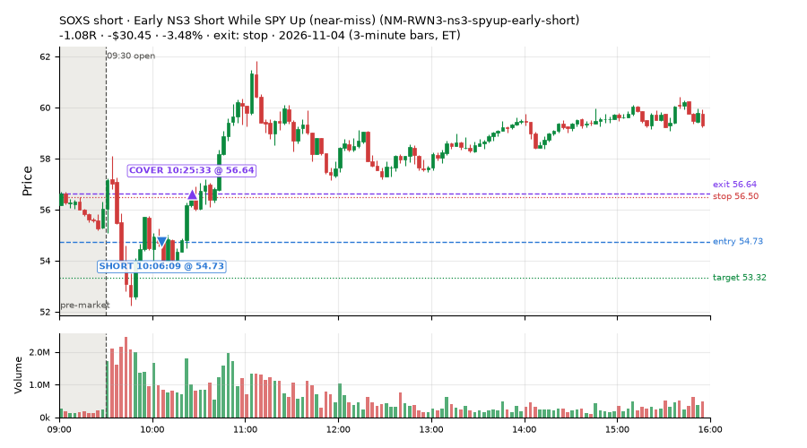
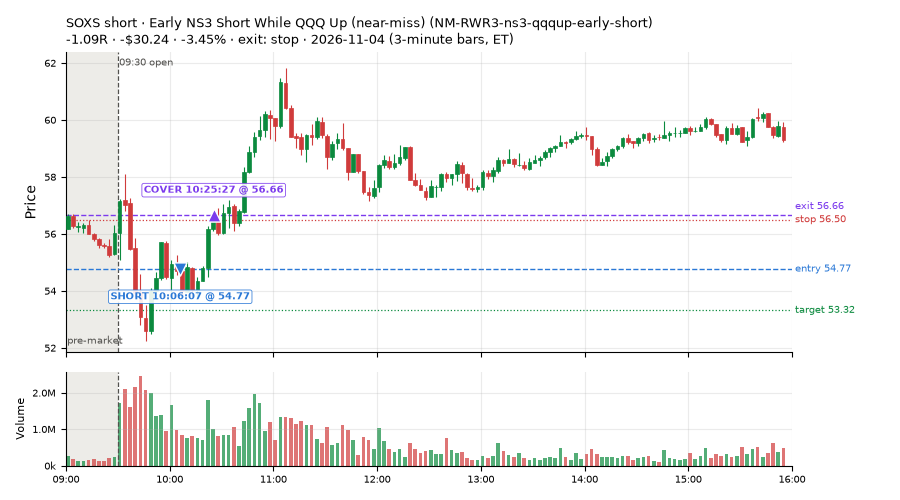
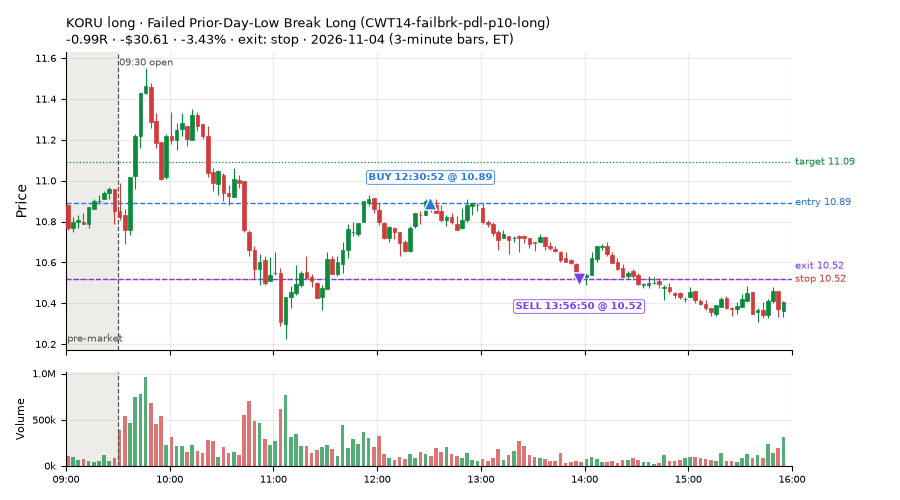

139 trades · win rate 45% · P/L $-501.86
PROBATION: no live setup has passed both locked test periods. 10 owner-directed setups added 2026-10-08 (MarcoFlow top 5 + 5 new), untested live. RW6G1 (RW6 + VWAP band guard) added 2026-10-09, probation.

| Symbol | Setup | Side | In | Out | Entry | Exit | Exit reason | % gained | P/L |
|---|---|---|---|---|---|---|---|---|---|
| CLSK | Gap-Down VWAP Loss Short (10% gap) (CWT09-gapdn-vwaploss-g10-short) | short | 10:30 | 15:55 | 7.14 | 6.77 | flatten | +5.18% | $46.62 |
| GLXY | RW1-gapdn-bounce-flowsell-short-FD | short | 12:10 | 14:51 | 14.78 | 14.36 | target | +2.84% | $25.62 |
| FORM | Gap-Down Heavy-Selling Short, no RSI condition (all day) (RW3S-gapdn-flowsell-short-FD) | short | 10:00 | 10:27 | 91.58 | 89.18 | target | +2.62% | $21.62 |
| Symbol | Setup | Side | In | Out | Entry | Exit | Exit reason | % lost | P/L |
|---|---|---|---|---|---|---|---|---|---|
| SOXS | NS3V1-am-widestop-short | short | 10:06 | 10:44 | 54.75 | 58.13 | stop | -6.17% | $-54.08 |
| SOXL | CWT14-failbrk-pdl-p10-long | long | 10:01 | 10:32 | 73.03 | 68.80 | stop | -5.79% | $-50.70 |
| SOXS | NM-RWN3-ns3-spyup-early-short | short | 10:06 | 10:25 | 54.73 | 56.64 | stop | -3.48% | $-30.45 |
| SOXS | NM-RWR3-ns3-qqqup-early-short | short | 10:06 | 10:25 | 54.77 | 56.66 | stop | -3.45% | $-30.24 |
| KORU | CWT14-failbrk-pdl-p10-long | long | 12:30 | 13:56 | 10.89 | 10.52 | stop | -3.43% | $-30.61 |








Signal to fill: median 2s, 90th percentile 5s (139 trades). Bars close each minute; the order follows the bar close.
Best excursion (MFE): median 0.30R; worst (MAE) median 0.89R. 42% of trades never got +0.25R in our favour; 0 reached +1R and still closed at or below 0.
| Symbol | Setup | Best R | Worst R | Closed R |
|---|---|---|---|---|
| JCI | RW3S-gapdn-flowsell-short-FD | +0.63 | -1.32 | -1.43 |
| INIO | RW3S-gapdn-flowsell-short-FD | +0.84 | -1.20 | -0.99 |
| SOXS | NM-RWR3-ns3-qqqup-early-short | +0.60 | -1.11 | -1.09 |
| SOXQ | CWT14-failbrk-pdl-p10-lowvol-long | +0.58 | -1.08 | -1.07 |
| SOXS | NM-RWN3-ns3-spyup-early-short | +0.57 | -1.11 | -1.08 |
| Entry time | Trades | Win | Avg R | P/L |
|---|---|---|---|---|
| 09:50-10:30 | 28 | 39% | -0.37 | $-226.21 |
| 10:30-11:30 | 43 | 47% | -0.19 | $-35.85 |
| 11:30-13:00 | 50 | 50% | -0.17 | $-186.52 |
| 13:00-14:00 | 10 | 40% | -0.30 | $-31.46 |
| 14:00-16:00 | 8 | 38% | -0.19 | $-21.82 |
| Setup | Trades | Win | Avg R | Adj R (net of SPY) | Avg R ex-market (all sessions) | P/L |
|---|---|---|---|---|---|---|
| Backside Lower-High Short (CWT04-backside-lh-a15-short) | 2.0 | 50% | -0.12 | -0.24 | – | $-8.74 |
| Backside VWAP-Test Short (CWT04-backside-vwaptest-a15-short) | 1.0 | 0% | -1.04 | -0.98 | -0.47 (beta -2.74, n 8) | $-4.14 |
| Panic Flush Reversal (deep, 3x volume) (CWT05-flush-m075-v3-long) | 2.0 | 0% | -1.04 | -0.98 | +0.07 (beta +4.81, n 14) | $-18.75 |
| Gap-Down VWAP Loss Short (10% gap) (CWT09-gapdn-vwaploss-g10-short) | 1.0 | 100% | +0.91 | +0.91 | +0.33 (beta -0.81, n 12) | $46.62 |
| Spike-Pullback Flag Breakout (CWT12-flag-s1-long) | 2.0 | 50% | -0.13 | -0.47 | -0.18 (beta -0.51, n 17) | $-3.89 |
| Stretched Below VWAP Bounce (CWT13-vwapstretch-z05-long) | 15.0 | 60% | -0.18 | -0.25 | +0.00 (beta +1.46, n 155) | $-38.61 |
| Stretched Below VWAP Bounce (far) (CWT13-vwapstretch-z075-long) | 3.0 | 100% | +0.85 | +0.78 | +0.32 (beta +2.36, n 17) | $22.32 |
| Stretched Above VWAP Fade (far) (CWT13-vwapstretch-z075-short) | 9.0 | 67% | +0.24 | +0.22 | -0.05 (beta -0.12, n 24) | $11.12 |
| Failed Prior-Day-Low Break, SPY-Range Regime (short leg) (CWT14-failbrk-pdl-p05-R2A-short) | 13.0 | 38% | -0.24 | -0.23 | -0.07 (beta -3.78, n 13) | $-53.31 |
| Failed Prior-Day-Low Break Long (CWT14-failbrk-pdl-p10-long) | 25.0 | 36% | -0.50 | -0.49 | -0.09 (beta +1.50, n 467) | $-191.25 |
| Failed Prior-Day-Low Break Long (0.1 ATR, low volume) [fill] (CWT14-failbrk-pdl-p10-lowvol-long) | 15.0 | 33% | -0.56 | -0.54 | -0.07 (beta +2.12, n 182) | $-112.75 |
| Sellers into Strength (all day) (MF5-flowsell-vwapup-rsi5hi) owner-directed; holdouts once: Sep-Oct -0.001R n264, Apr-Jun -0.010R n1199 | 2.0 | 50% | -0.09 | -0.20 | +0.16 (beta -2.66, n 12) | $-5.27 |
| Late-Day ETF Dip Buy (near-miss) (NM-ETF-late-dip-di-long) | 2.0 | 0% | -0.31 | -0.24 | +0.26 (beta -0.04, n 10) | $-13.51 |
| Afternoon Higher-Low Long (near-miss) (NM-HL-T75-pm-long) | 1.0 | 100% | +0.03 | +0.05 | +0.05 (beta +1.69, n 44) | $1.45 |
| Gap-Down Reclaim Fade, Afternoon (near-miss) (NM-PM-gapdn-above-pdh-rvol-short) | 1.0 | 100% | +0.71 | +0.61 | – | $4.70 |
| Early NS3 Short While SPY Up (near-miss) (NM-RWN3-ns3-spyup-early-short) | 2.0 | 0% | -1.03 | -1.06 | -0.66 (beta -3.34, n 6) | $-50.66 |
| Afternoon Exhaustion Short, Gap-Down, SPY Up (near-miss) (NM-RWR1-exh150-gapdn-spyup-pm-short) | 1.0 | 100% | +0.55 | +0.49 | – | $7.05 |
| Early NS3 Short While QQQ Up (near-miss) (NM-RWR3-ns3-qqqup-early-short) | 1.0 | 0% | -1.09 | -1.18 | – | $-30.24 |
| Big Loser VWAP Reclaim Fade, Morning, Wide Stop (NS3V1-am-widestop-short) | 3.0 | 67% | -0.03 | -0.11 | -0.47 (beta -2.21, n 22) | $-21.84 |
| RW1-gapdn-bounce-flowsell-short-FD | 6.0 | 67% | +0.36 | +0.29 | +0.05 (beta -1.64, n 51) | $35.54 |
| Gap-Down Heavy-Selling Short, no RSI condition (all day) (RW3S-gapdn-flowsell-short-FD) | 27.0 | 48% | -0.07 | -0.05 | -0.01 (beta -1.81, n 51) | $-43.07 |
| exhaustion_short-FD | 5.0 | 0% | -0.80 | -0.79 | -0.33 (beta -3.26, n 67) | $-34.62 |
Market direction (SPY, beta 1) accounted for $-14.79 of today's $-501.86; the rest ($-487.07) came from the setups themselves. Avg R net of SPY: -0.24 (incl. a hedge leg's cost; report only).
45 setups live today. Today: 273 signals, 139 taken, 16 lost because another setup held the symbol (6%). Since 2026-10-12 (18 sessions): 8801 signals, 4377 taken, 697 lost to other setups (8%). Peak open positions today 38 of 400 slots. Earnings blackout removed 1682 symbols before scanning.
Simulated playing time (not live): 4409 what-if trades of signals not taken, avg -0.09R, 58% winners; of them 697 lost to another setup (avg -0.20R).
Silent: LD4-st4-breadthup-t1s05-long, LD8-spy-dip030-breadthturn-spxl-holdtr-long, LD1-ns1-breadthup-t05s1-long, CWT04-backside-lh-a25-short, CWT04-backside-vwaptest-a25-short · Crowded out: MF5-flowsell-vwapup-rsi5hi, CWT14-failbrk-pdl-p05-R2A-short, NS3-failed-vwap-reclaim-short-FD · Starved: exhaustion_short-FD, MF2-open-rsimidhi-flowsell, NS5-sma50-flush-oversold-long-FD, RW4-ns3-adv150-short-FD
| Prio | Setup | Today sig / taken | Sessions | Signals / taken / trades | Taken/day | Expected/day | Lost to other setups | Lost to (setup n) | Top skip reasons | SIMULATED: not-taken n / avg R / win | Verdict |
|---|---|---|---|---|---|---|---|---|---|---|---|
| 1 | Big Loser VWAP Reclaim Fade, Morning, Wide Stop NS3V1-am-widestop-short | 8 / 3 | 9 | 52 / 22 / 22 | 2.44 | 5.30 | 3 | NS3V1-am-widestop-short 3, NM-RWR3-ns3-qqqup-early-short 1, NM-RWN3-ns3-spyup-early-short 1 | not shortable / shorts off 18, spread / quote / size 9, symbol held by another setup 3 | 30 / -0.07R / 63% | slow 12.2 entries/week; ~5 weeks to 60 trades |
| 2 | * Oversold EMA Cross-Down with Breadth Turning Up (near-miss) LD4-st4-breadthup-t1s05-long | 0 / 0 | 11 | 0 / 0 / 0 | 0.00 | – | 0 | – | – | 0 / – | silent no signals in 11 session(s); no expected rate on file |
| 3 | * Oversold Slope Turn with Breadth Turning Up (near-miss) LD5-st2-breadthup-t05s1-long | 0 / 0 | 11 | 1 / 0 / 0 | 0.00 | – | 1 | NS3V1-am-widestop-short 1 | symbol held by another setup 1 | 1 / +0.51R / 100% | slow no entries yet |
| 4 | * SPY Dip of 0.30%, Breadth Turn (SPXL, trailing) (near-miss) LD8-spy-dip030-breadthturn-spxl-holdtr-long | 0 / 0 | 11 | 0 / 0 / 0 | 0.00 | – | 0 | – | – | 0 / – | silent no signals in 11 session(s); no expected rate on file |
| 5 | * Oversold Slope Turn after an SPY Dip-Turn (near-miss) LD3-st2-idxturn-t05s1-long | 0 / 0 | 11 | 1 / 0 / 0 | 0.00 | – | 1 | NS3V1-am-widestop-short 1 | symbol held by another setup 1 | 1 / +0.51R / 100% | slow no entries yet |
| 6 | * SPY Dip of 0.2 ATR, Breadth Turn (SPXL, trailing) (near-miss) LD6-spy-dip020atr-breadthturn-spxl-holdtr-long | 0 / 0 | 11 | 2 / 2 / 2 | 0.18 | – | 0 | – | – | 0 / – | slow 0.9 entries/week; ~66 weeks to 60 trades |
| 7 | * Oversold Pop with Breadth Turning Up (near-miss) LD1-ns1-breadthup-t05s1-long | 0 / 0 | 11 | 0 / 0 / 0 | 0.00 | – | 0 | – | – | 0 / – | silent no signals in 11 session(s); no expected rate on file |
| 8 | * Shallow Nasdaq Dip, Breadth Turn (TQQQ) (near-miss) LD2-qqq-dip015-breadthturn-tqqq-t05s1-long | 0 / 0 | 11 | 4 / 4 / 4 | 0.36 | – | 0 | – | – | 0 / – | slow 1.8 entries/week; ~33 weeks to 60 trades |
| 9 | * Oversold Pop after an SPY Dip-Turn (trailing) (near-miss) LD7-ns1-idxturn-holdtr-long | 0 / 0 | 11 | 1 / 1 / 1 | 0.09 | – | 0 | – | – | 0 / – | slow 0.5 entries/week; ~132 weeks to 60 trades |
| 10 | Monday Weak-RS NS3 Short (near-miss) NM-RWN5-ns3-mon-weakrs-short | 0 / 0 | 13 | 19 / 7 / 7 | 0.54 | – | 0 | – | not shortable / shorts off 6, spread / quote / size 5, other 1 | 12 / +0.29R / 67% | slow 2.7 entries/week; ~22 weeks to 60 trades |
| 11 | Early NS3 Short While QQQ Up (near-miss) NM-RWR3-ns3-qqqup-early-short | 2 / 1 | 13 | 13 / 4 / 4 | 0.31 | – | 1 | NS3V1-am-widestop-short 1, NM-RWR3-ns3-qqqup-early-short 1, NM-RWN3-ns3-spyup-early-short 1 | spread / quote / size 5, not shortable / shorts off 3, symbol held by another setup 1 | 9 / +0.10R / 56% | slow 1.5 entries/week; ~39 weeks to 60 trades |
| 12 | Early NS3 Short While SPY Up (near-miss) NM-RWN3-ns3-spyup-early-short | 3 / 2 | 13 | 22 / 6 / 6 | 0.46 | – | 1 | NS3V1-am-widestop-short 1, NM-RWN5-ns3-mon-weakrs-short 1, NM-RWR3-ns3-qqqup-early-short 1 | not shortable / shorts off 8, spread / quote / size 6, symbol held by another setup 1 | 16 / +0.20R / 62% | slow 2.3 entries/week; ~26 weeks to 60 trades |
| 13 | Late-Day ETF Dip Buy (near-miss) NM-ETF-late-dip-di-long | 2 / 2 | 13 | 12 / 10 / 10 | 0.77 | – | 0 | – | spread / quote / size 1, other 1 | 2 / +0.19R / 50% | slow 3.8 entries/week; ~16 weeks to 60 trades |
| 14 | NS2 Up-3 Short, QQQ Up, Slope Down (near-miss) NM-RWR4-ns2-up3-qqqup-slopedn-short | 0 / 0 | 13 | 6 / 5 / 5 | 0.38 | – | 0 | – | not shortable / shorts off 1 | 1 / -1.04R / 0% | slow 1.9 entries/week; ~31 weeks to 60 trades |
| 15 | Afternoon Exhaustion Short, Gap-Down, SPY Up (near-miss) NM-RWR1-exh150-gapdn-spyup-pm-short | 1 / 1 | 13 | 1 / 1 / 1 | 0.08 | – | 0 | – | – | 0 / – | slow 0.4 entries/week; ~156 weeks to 60 trades |
| 16 | NS2 Short, SPY Up 0.5%, Not Friday (near-miss) NM-RWN4-ns2-spyup05-notfri-short | 1 / 0 | 13 | 10 / 8 / 8 | 0.62 | – | 0 | – | not shortable / shorts off 1, spread / quote / size 1 | 2 / -0.28R / 50% | slow 3.1 entries/week; ~20 weeks to 60 trades |
| 17 | Gap-Down Capitulation Buy (near-miss) NM-AR-AM-gapdown-capitulation-long | 1 / 0 | 13 | 62 / 40 / 40 | 3.08 | – | 0 | – | spread / quote / size 21, other 1 | 22 / -0.31R / 36% | ok 15.4 entries/week |
| 18 | Quiet Downtrend Bounce Short (near-miss) NM-AMS-N1-quiet-morning-short | 0 / 0 | 13 | 2 / 1 / 1 | 0.08 | – | 1 | NM-AR-AM-gapdown-capitulation-long 1 | symbol held by another setup 1 | 1 / +0.51R / 100% | slow 0.4 entries/week; ~156 weeks to 60 trades |
| 19 | Gap-Down Reclaim Fade, Afternoon (near-miss) NM-PM-gapdn-above-pdh-rvol-short | 1 / 1 | 13 | 3 / 3 / 3 | 0.23 | – | 0 | – | – | 0 / – | slow 1.2 entries/week; ~52 weeks to 60 trades |
| 20 | Gap-Down VWAP Loss Short, Slope Filter (near-miss) NM1-cwt09-g10-vwaploss-short | 4 / 0 | 13 | 51 / 4 / 4 | 0.31 | – | 0 | – | not shortable / shorts off 40, spread / quote / size 4, other 3 | 47 / +0.10R / 55% | slow 1.5 entries/week; ~39 weeks to 60 trades |
| 21 | Afternoon Higher-Low Long (near-miss) NM-HL-T75-pm-long | 1 / 1 | 13 | 48 / 44 / 44 | 3.38 | – | 2 | CWT09-gapdn-vwaploss-g10-short 2, CWT09-gapdn-bounce-g10-lowerhalf-short 2 | symbol held by another setup 2, spread / quote / size 2 | 4 / +0.12R / 75% | ok 16.9 entries/week |
| 22 | Backside Lower-High Short (big runner) CWT04-backside-lh-a25-short | 0 / 0 | 18 | 0 / 0 / 0 | 0.00 | – | 0 | – | – | 0 / – | silent no signals in 18 session(s); no expected rate on file |
| 23 | Backside VWAP-Test Short (big runner) CWT04-backside-vwaptest-a25-short | 0 / 0 | 18 | 0 / 0 / 0 | 0.00 | – | 0 | – | – | 0 / – | silent no signals in 18 session(s); no expected rate on file |
| 24 | Gap-Down VWAP Loss Short (10% gap) CWT09-gapdn-vwaploss-g10-short | 5 / 1 | 18 | 146 / 12 / 12 | 0.67 | – | 0 | – | not shortable / shorts off 126, spread / quote / size 6, daily loss cap 1 | 134 / -0.00R / 57% | slow 3.3 entries/week; ~18 weeks to 60 trades |
| 25 | Panic Flush Reversal (deep, 5x volume) CWT05-flush-m075-v5-long | 1 / 0 | 18 | 8 / 4 / 4 | 0.22 | – | 0 | – | daily loss cap 2, spread / quote / size 2 | 4 / +0.43R / 100% | slow 1.1 entries/week; ~54 weeks to 60 trades |
| 26 | Gap-Down Bounce Rejection Short (10% gap) CWT09-gapdn-bounce-g10-lowerhalf-short | 3 / 0 | 18 | 145 / 17 / 17 | 0.94 | – | 0 | – | not shortable / shorts off 118, spread / quote / size 7, price through stop/target 1 | 128 / -0.20R / 38% | slow 4.7 entries/week; ~13 weeks to 60 trades |
| 27 | Backside Lower-High Short CWT04-backside-lh-a15-short | 2 / 2 | 18 | 8 / 4 / 4 | 0.22 | – | 0 | – | spread / quote / size 2, daily loss cap 1, not shortable / shorts off 1 | 4 / +0.43R / 75% | slow 1.1 entries/week; ~54 weeks to 60 trades |
| 28 | Panic Flush Reversal (5x volume) CWT05-flush-m05-v5-long | 1 / 0 | 18 | 13 / 7 / 7 | 0.39 | – | 1 | CWT14-failbrk-orl-p10-long 1 | spread / quote / size 3, daily loss cap 2, symbol held by another setup 1 | 6 / +0.50R / 100% | slow 1.9 entries/week; ~31 weeks to 60 trades |
| 29 | Panic Flush Reversal (deep, 3x volume) CWT05-flush-m075-v3-long | 4 / 2 | 18 | 22 / 14 / 14 | 0.78 | – | 0 | – | spread / quote / size 4, daily loss cap 3, broker rejected 1 | 8 / +0.06R / 75% | slow 3.9 entries/week; ~15 weeks to 60 trades |
| 30 | Spike-Pullback Flag Breakout CWT12-flag-s1-long | 2 / 2 | 18 | 22 / 17 / 17 | 0.94 | – | 0 | – | daily loss cap 2, spread / quote / size 1, broker rejected 1 | 5 / -0.06R / 80% | slow 4.7 entries/week; ~13 weeks to 60 trades |
| 31 | Backside VWAP-Test Short CWT04-backside-vwaptest-a15-short | 3 / 1 | 18 | 17 / 8 / 8 | 0.44 | – | 1 | CWT14-failbrk-pdl-p05-lowvol-long 1 | spread / quote / size 4, not shortable / shorts off 2, symbol held by another setup 1 | 9 / +0.40R / 44% | slow 2.2 entries/week; ~27 weeks to 60 trades |
| 32 | Early Sellers into a Pop (index down, no gap up) (near-miss) NM-MF3-qqqdn-gapdn-FD | 0 / 0 | 11 | 43 / 24 / 24 | 2.18 | 4.90 | 4 | NM-AR-AM-gapdown-capitulation-long 4 | not shortable / shorts off 9, spread / quote / size 6, symbol held by another setup 4 | 19 / +0.13R / 58% | slow 10.9 entries/week; ~6 weeks to 60 trades |
| 33 | Stretched Above VWAP Fade (far) CWT13-vwapstretch-z075-short | 13 / 9 | 18 | 44 / 24 / 24 | 1.33 | – | 0 | – | not shortable / shorts off 9, daily loss cap 4, spread / quote / size 3 | 20 / -0.42R / 30% | slow 6.7 entries/week; ~9 weeks to 60 trades |
| 34 | RW1-gapdn-bounce-flowsell-short-FD RW1-gapdn-bounce-flowsell-short-FD | 11 / 6 | 11 | 95 / 51 / 51 | 4.64 | 17.10 | 4 | NM-AR-AM-gapdown-capitulation-long 1, NM-HL-T75-pm-long 1, CWT12-coil-k4-long 1 | spread / quote / size 13, daily loss cap 10, not shortable / shorts off 10 | 44 / +0.34R / 68% | ok 23.2 entries/week |
| 35 | Sellers into Strength (all day) MF5-flowsell-vwapup-rsi5hi | 2 / 2 | 11 | 40 / 12 / 12 | 1.09 | 15.47 | 20 | MF5-flowsell-vwapup-rsi5hi-FD 19, NM-AR-AM-gapdown-capitulation-long 1 | symbol held by another setup 20, spread / quote / size 3, other 3 | 28 / -0.15R / 46% | crowded-out 20 of 40 signals (50%) lost to setups already holding the symbol |
| 36 | exhaustion_short-FD exhaustion_short-FD | 12 / 5 | 11 | 108 / 67 / 67 | 6.09 | 64.64 | 3 | CWT12-coil-k4-long 3 | not shortable / shorts off 25, spread / quote / size 12, symbol held by another setup 3 | 41 / -0.16R / 44% | starved 6.09 entries/day vs ~64.64 expected |
| 37 | Stretched Below VWAP Bounce (far) CWT13-vwapstretch-z075-long | 5 / 3 | 18 | 54 / 17 / 17 | 0.94 | – | 0 | – | daily loss cap 28, spread / quote / size 6, other 3 | 37 / -0.29R / 43% | slow 4.7 entries/week; ~13 weeks to 60 trades |
| 38 | Failed Prior-Day-Low Break, SPY-Range Regime (long leg) CWT14-failbrk-pdl-p05-R2A-long | 0 / 0 | 3 | 59 / 39 / 39 | 13.00 | – | 2 | RW3S-gapdn-flowsell-short-FD 2 | spread / quote / size 18, symbol held by another setup 2 | 20 / -0.30R / 55% | ok 65.0 entries/week |
| 39 | Failed Prior-Day-Low Break, SPY-Range Regime (short leg) CWT14-failbrk-pdl-p05-R2A-short | 32 / 13 | 3 | 32 / 13 / 13 | 4.33 | – | 12 | CWT14-failbrk-pdl-p10-long 12, CWT14-failbrk-pdl-p10-lowvol-long 7 | symbol held by another setup 12, spread / quote / size 6, not shortable / shorts off 1 | 19 / +0.11R / 84% | crowded-out 12 of 32 signals (38%) lost to setups already holding the symbol |
| 40 | Stretched Below VWAP Bounce CWT13-vwapstretch-z05-long | 17 / 15 | 17 | 360 / 155 / 155 | 9.12 | – | 2 | CWT14-failbrk-pdh-p05-lowvol-short 1, CWT09-gapdn-vwaploss-g10-short 1, CWT09-gapdn-bounce-g10-lowerhalf-short 1 | daily loss cap 152, other 26, spread / quote / size 24 | 204 / -0.15R / 59% | ok 45.6 entries/week |
| 41 | Early Sellers, Mid-High RSI MF2-open-rsimidhi-flowsell | 4 / 0 | 6 | 7 / 1 / 1 | 0.17 | 1.30 | 0 | – | not shortable / shorts off 2, spread / quote / size 2, other 2 | 6 / -0.64R / 17% | starved 0.17 entries/day vs ~1.30 expected |
| 42 | Afternoon VWAP Reclaim Fade NS4-pm-vwap-reclaim-oversold-short | 5 / 0 | 6 | 20 / 9 / 9 | 1.50 | 3.05 | 0 | – | other 7, spread / quote / size 4 | 11 / +0.27R / 55% | slow 7.5 entries/week; ~8 weeks to 60 trades |
| 43 | Failed Prior-Day-Low Break Long (0.1 ATR, low volume) [fill] CWT14-failbrk-pdl-p10-lowvol-long | 26 / 15 | 13 | 284 / 182 / 182 | 14.00 | – | 10 | CWT14-failbrk-pdl-p10-long 3, RW3S-gapdn-flowsell-short-FD 3, CWT14-failbrk-pdl-p05-lowvol-long 2 | spread / quote / size 63, other 15, daily loss cap 12 | 99 / -0.14R / 62% | ok 70.0 entries/week |
| 44 | Failed Prior-Day-Low Break Long CWT14-failbrk-pdl-p10-long | 44 / 25 | 18 | 742 / 467 / 467 | 25.94 | – | 25 | CWT14-failbrk-pdl-p10-lowvol-long 15, CWT14-failbrk-pdl-p05-lowvol-long 4, RW3S-gapdn-flowsell-short-FD 3 | spread / quote / size 169, daily loss cap 31, other 31 | 272 / -0.06R / 65% | ok 129.7 entries/week |
| 45 | Gap-Down Heavy-Selling Short, no RSI condition (all day) RW3S-gapdn-flowsell-short-FD | 57 / 27 | 2 | 106 / 51 / 51 | 25.50 | – | 1 | CWT14-failbrk-pdl-p05-R2A-long 1, CWT14-failbrk-pdl-p10-lowvol-long 1, CWT14-failbrk-pdl-p10-long 1 | spread / quote / size 23, other 17, not shortable / shorts off 14 | 55 / -0.03R / 55% | ok 127.5 entries/week |
Every trade is attached as a CSV you can open and edit in Excel or Google Sheets. Live page: https://misiti15.github.io/MCF/live/